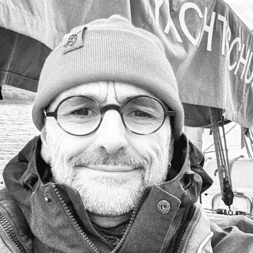

TL;DR: I'm Hanz Geeratz, a Fractional CTO and Startup Scaling & Growth Consultant with over 20 years of experience in tech leadership and startups. I specialize in scaling development teams and aligning diverse strategies with robust engineering execution. Off-duty, I'm family-focused, practice secular Buddhism, and am restoring my traditional Dutch sailing boat. I'm available for freelance work.
CONTACT: You can find me on LinkedIn. Email: hnzgeeratz@pm.me
I'm Hanz Geeratz, a Fractional CTO, Startup Scaling & Growth Consultant based in Hamburg, Germany. With over 20 years of experience, I excel at building and leading high-performing full-stack engineering teams.
For the last four years, I served as CTO at Wunder Mobility, gaining extensive experience in driving a successful tech startup. I specialize in team development and setup, focusing on building and nurturing groups that translate strategic vision into scalable, highly available web and mobile applications. My approach emphasizes data-driven decision-making and aligning diverse strategies with robust engineering execution.
Throughout my career, I've also been strategically involved in startup due diligence, funding rounds, and M&A transactions. I excel at smartly growing teams, optimizing and rightsizing them, and providing crisis solutions, including reorganizing engineering teams based on evolving business needs.
I am open to freelance work, offering services in:
London 2024 – Present
2021 - 2024
2019 - 2020
2015 / 2020
2007 / 2025
Managed technical operations, including strategic project planning and analysis for several clients.
2004 / 2006
Provided independent IT project consultancy.
2004
Provided independent IT project consulting for platform migration.
2002 / 2004
Managed technical projects, server/DB administration, and development.
2000 / 2003
Headed development, HR, and strategic planning for the Hamburg branch.
1998 / 2000
Outside of work I am family oriented and a practicing secular Buddhist, finding relaxation, mindfulness and, a "just enough" philosophy through meditation and yoga. Currently, I'm engrossed in renovating a traditional Dutch sailing boat, a Zeeschouw named Vrouwe Johanna. This historic barge is a project I truly love, and I regularly share updates on its progress on my Instagram account: @vrouwe_johanna. As they say, "The cabin of a ship is truly a wonderful thing; not only will it shelter you from a tempest, but from the other troubles in life, it is a safe retreat."
CONTACT: You can find me on LinkedIn or, take a look at my Instagram: @vrouwe_johanna, where I share updates on my sailboat renovation. Email: hnzgeeratz@pm.me
Angaben gemäß § 5 TMG:
J. Geeratz
Hasselbrookstrasse 33
Hamburg 22089
Germany
Kontakt:
E-Mail: hnzgeeratz@pm.me
Verantwortlich für den Inhalt nach § 55 Abs. 2 RStV:
J. Geeratz
Hasselbrookstrasse 33
22089 Hamburg